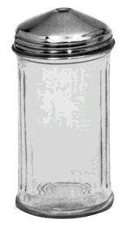

The Legend-News
What We Got Here
C.W. Sightings in Action Central Eyewitness News; “Sugar Shock”, a Tale of the Old Home Café; in past news, the entire issue of 1999 April 4, including the first appearance of “Ratchetjaw” as Song A’ Th’ Week.
Action Central Eyewitness News
C.W. McCall continues to be mentioned in the news, even if those references are not quite complimentary.
In a Huffington Post report on One-Hit Wonder Day (September 25), “…the world was surely okay with making C.W. McCall’s 1976 hit ’Convoy’ the only No. 1 song dedicated to CB radio.” Pshaw. My world disagrees.
Jason Offut, on his “ summer research trip to Canada ”, passed through Audubon, Iowa and questioned the existence of Albert the Bull:
Why build a gigantic statue of a bull when you’ve got this whole Audubon [a reference to John James Audubon, the “bird guy” — Ed.] thing working for you? Then there’s C.W. McCall who was born in Audubon. Yes, C.W. McCall who wrote and performed the 1976 song “Convoy” which hit No. 1 on the charts and became a 1978 movie starring Kris Kristofferson, Ali MacGraw and Ernest Borgnine.
And in music history, on September 19:
In 1975, country singer C.W. McCall’s album “Black Bear Road” was released. From this LP would come “Convoy,” a multi-million-selling single which sparked the CB radio craze.
Yeah, blame C.W.
Lastly, in real news, Bill Fries continues to receive requests for radio interviews, even though he’s “…semi-partially-almost-reluctantly-not-quite retired, but reconsidering it.”
If the interviewers will send a copy of an interview to me, I’ll post it on this site. (Nudge, nudge; you know who you are. No, Paul, not you.)
Tales of the Old Home Café
Sugar Shock
by Ed. Floden
Ben Fellows stared at the sugar shaker on the table, slowly turning it around. Its fluted exterior appeared the same at any position; but Ben’s attention was focused on the lid of the shaker. The lid, made of stainless steel, was short and conical, with an uncovered quarter-inch hole at its apex. Ben did not like it.

Karen approached Ben’s table, a full coffee carafe in hand. “Top it off?” she asked.
Ben grunted “yeah”, then added “I don’t like it.”
“What?” asked Karen. “Something wrong with the coffee? We’re not using that food-service stuff that we had last month. Finally ran out of it.”
“Nah, the coffee’s fine,” said Ben. “It’s this sugar shaker. It’s wrong.” He pointed to the lid of the shaker. “No flap.” He paused. “It ought to have a flap.”
Karen poured more coffee into Ben’s cup. She looked closely at the shaker. “I hadn’t noticed,” she said, and she glanced around the room at the sugar shakers on the other tables. All of them, except the one on Ben’s table, were of a different design: the glass was the same, but their tops had a hole near the edge, and that hole was covered by a small hinged flap.
She turned back to Ben, who was now pouring more sugar into his coffee, but carefully watching the dispenser as if he expected its operation to be oddly different than that of a flap-covered lid. But the sugar flowed from dispenser to coffee cup with ease. Ben grunted “huh,” apparently accepting the results.
“It must be a stray,” said Karen. “Jon’s been clearing out the stock room. Probably found an old box of ’em that we’d forgotten about. Want me to switch it with a regular one?”
Ben considered the offer for a few moments. “Nah,” he said. “Betty’s been hectoring me to try new things. I guess this’ll do for now. Thanks, though.”
“You’re welcome,” said Karen. “Anything else that you want?” she asked. Ben shook his head “no,” and Karen turned away, looking for another customer in need of a refill.
Previously, in The Legend-News
From the 1999 April 4 issue of The Legend-News. Oh, heck, this is the entire issue.
An important note. Back in 1995, a couple of guys started Talk Like a Pirate Day. As interesting a holiday as it is (and important to Pastafarians ), pirates — at least, the yo-ho-ho kind — haven’t been around for about 200 years. But if you want rugged individuals, who travel the seas of asphalt and the rivers of concrete, you’ve got truckers!
Now I may be a little late (ya think?), but I hereby declare this October 4 (a.k.a. “10-4”) as the Zeroth Celebration of Talk Like a Trucker Day! To start the festivities, as abbreviated as they are, here is a refresher course in truckerspeak.
Next year, the real holiday!
I Gotta Code
Way back in the mists of time, when men were men and women were the objects of sexual harassment, there was Citizens Band radio, a.k.a. “CB”. And there were those shorthand expressions known as the “10-Code”.
There really isn't any “standard” 10-code, although the most common terms are
| 10-4 | OK (acknowledgement) |
|---|---|
| 10-7 | Out of service |
| 10-8 | In service |
| 10-9 | Repeat |
| 10-10 | Negative |
| 10-20 | Location |
| 10-33 | Emergency |
| 10-36 | Time of day |
| 10-100 | Rest break |
And even those codes may vary. There are “official” lists, but those lists are established for the use of particular organizations, usually police, and the codes may vary between organizations. If you’re interested in lists of 10-codes, check your favorite search engine for “10-code” or “ten-code”.
If you watched the 1999 March 28 episode of The Simpsons — “Maximum Homerdrive” — wherein Homer becomes a trucker, a “10-38” was broadcast and you saw a trucker consulting a page which listed a few 10-codes. Here's that list:
| 10-33 | Actual bear in air. |
|---|---|
| 10-34 | Can’t unchain wallet. |
| 10-35 | Hot enough for ya? |
| 10-36 | Ghost truck on highway. |
| 10-37 | Ask me about my grandchildren. |
| 10-38 | Outsider blabbing about auto-drive system. |
| 10-39 | I love you, gay buddy. |
| 10-40 | Taxes due. |
Obviously, this is nowhere near being a standard list. :)
Song A’ Th’ Week
You were paying attention, weren’t you? ’Cause here’s the quiz. And if you want to sing along…
Ratchetjaw
(C.W. McCall, Bill Fries, Chip Davis)
YEE-HAW! Merciful sakes alive! You wanna be one a’ them CBers, you gonna learn how to ratchetjaw!
Pay attention now; I’m only gonna explain it to ya once.
You gotta go runnin’ amuck in a pick-’em-up truck

With one a’ those fancy sidebands?
Get four-on-the-floor and two on the door
Get a power mike in yer jaw-hand
Prepare to strike when ya key the mike
’Cause ya never know who’s a-listenin’
Some clown insists on a 10-36
This here’s what you give ’im:
“Four, good buddy, I made me a study
An’ I figger it’s the dark a’ the moon, son
It’s half-past spring an’ a quarter ta fall
An’ the big hand’s a-settin’ on noon, son
Now if the fish don’t bite and the almanac’s right
And the groundhog sees his shadow
A 10-36 goes tick-tock-tick.
”
And that’s what I call ratchetjaw!
Gotta git ya a base, out there at yer place
With a forty-foot pole on the chimney
With a thousand watts in yer flowerpots
And a ree-mote line in the biffy
If ya feel a twitch when ya throw the switch
Ya gonna dim all the lights in Wichita
Gonna send out a wave ta make the government rave
And this here’s whatcha tell ’em all:
“Yeah, four, good buddy, yer comin’ in cruddy
But yer walkin’ right through my wall, boy
Yer carrier’s cool, you makin’ me drool
You were definitely battin’ my ball, boy
You hittin’ me round about fifteen pound
You cut me up like a bandsaw
But what the heck, it’s just a radio check.”
And that there’s how to ratchetjaw
[CB conversations. They’re overlaid, as if you’re listening to a party line.]
[Woman’s voice] Breaker, breaker, breaker, breaker. We lookin’ for that one Buffalo Roy out there. Buffalo Roy, what’s your twenty? Where are you anyway, Buffalo Roy? Are you out there? Come on in there, Buffalo Roy. 10-4.
[Man’s voice] Lissen, you. Shut up on all them breakers. One breaker’s enough. [words missing] …channel all the time. Can’t hear a damn thing anybody’s sayin’.
[C.W.] Buffalo Roy? That’s a dumb handle.
Wanna feel some pain? Just turn up yer gain
Get a fearful earful a’ garbage
Ta suppress a belch, just hit yer squelch
You can cut out all the carnage
You wanna have fun, you son-of-a-guns
Just get on the press-ta-talk switch
You gonna amuse ’em an’ really confuse ’em
With a little ol’ thing called ratchetjaw
Yeah, let them suckers think yer a trucker
Say stuff they can’t understand, son
Just bounce up-an’-down while yer toolin’ around
Gonna sound like a truck-drivin’ man, son
Just tell yer beaver that you gonna leave ’er
You catch her on the bounce-around
If she comes back with a smart-off crack
Say “X-Y-L, it’s show-an’-tell. We definitely got us to go now.
Keep yer pants on honey, hang onto the money
Yer X-Y-M’s gotta blow now
Eighty-eight, thirds, and feed my bird
An’ all them numbers upon ya all
If speed don’t kill, then CB will.”
And that’s what I call ratchetjaw
[More CB conversations.]
Breaker, breaker, breaker, breaker, breaker, breaker, [repeated almost ad infinitum, punctuated by bouts of laughter]
[Man’s voice. Begins deep, slowly rising to “Shirley and Squirrely” squeakiness.] Yeah, 10-4, we got ya, breaker. Come back on that? Say, what kind a’… s’not? some kind a’ cotton-pickin’… you puttin’ me on, aren’t cha? Yeah, you puttin’ me on, aren’t cha? [Laughter] 10-4. 10-4.
| 10-4 | OK, acknowledged |
|---|---|
| 10-36 | Time of day |
| XYL | Ex-Young Lady, a.k.a. “wife” |
| XYM | Ex-Young Man, a.k.a. “husband” |
“Ratchetjaw” does not appear on any C.W. McCall audio CD.
The Legend-News is published monthly by TechRen Enterprises, stopping to smell the Roosevelts. Copyright 2011 TechRen Enterprises. Send subscription requests, unsubscribe demands, complaints, kudos, suggestions, news and other contributions to Legend-News@cw-mccall.com. Almost everything in The Legend-News has been written by Ed. Floden, except for the stuff that he blames on someone else. Piracy Policy: Arrrr! You’re walkin’ the plank, matey. “If we can hit that bullseye, the rest of the dominoes will fall like a house of cards. Checkmate.”